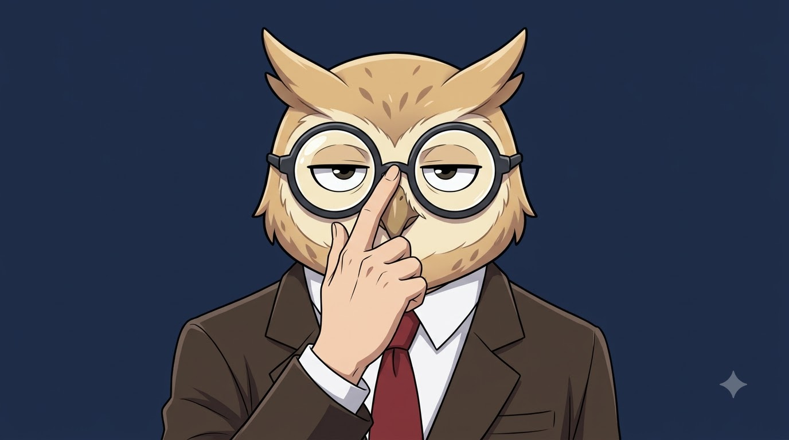
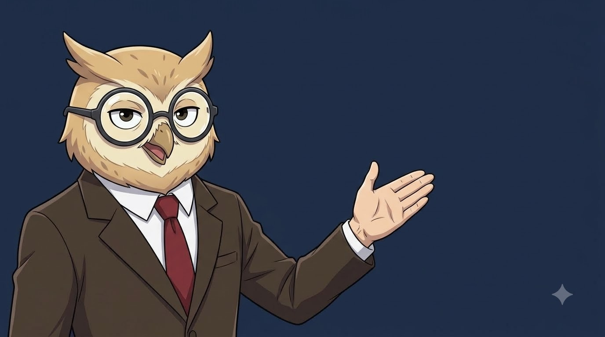
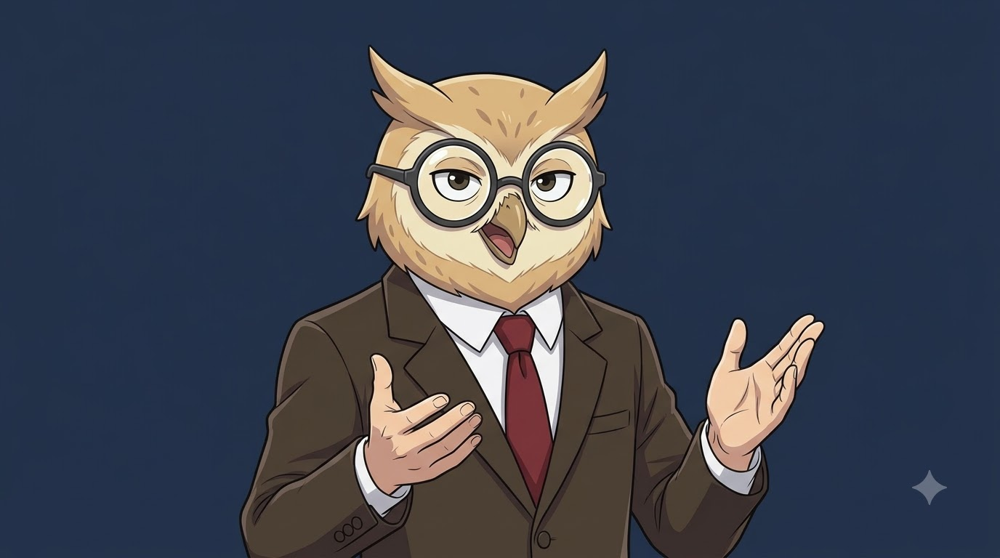
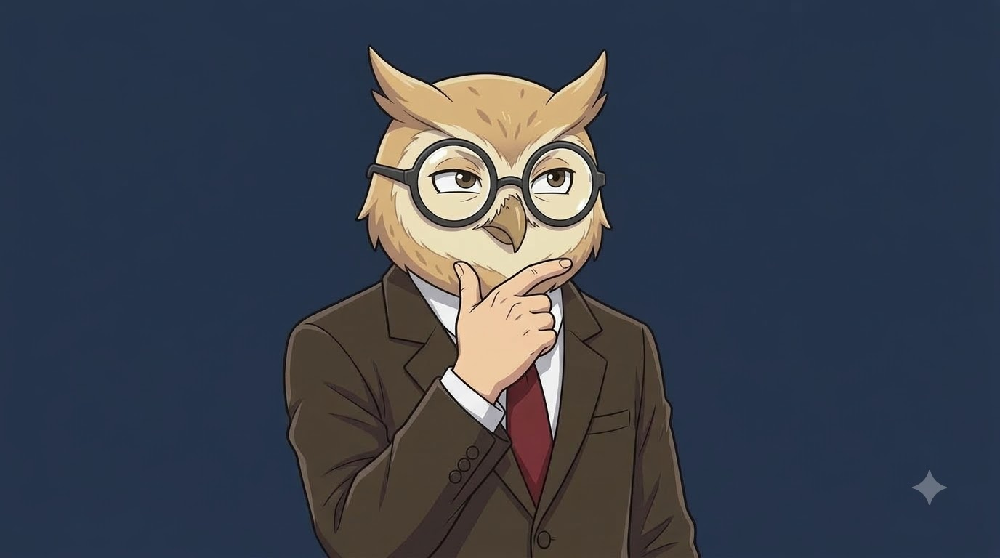
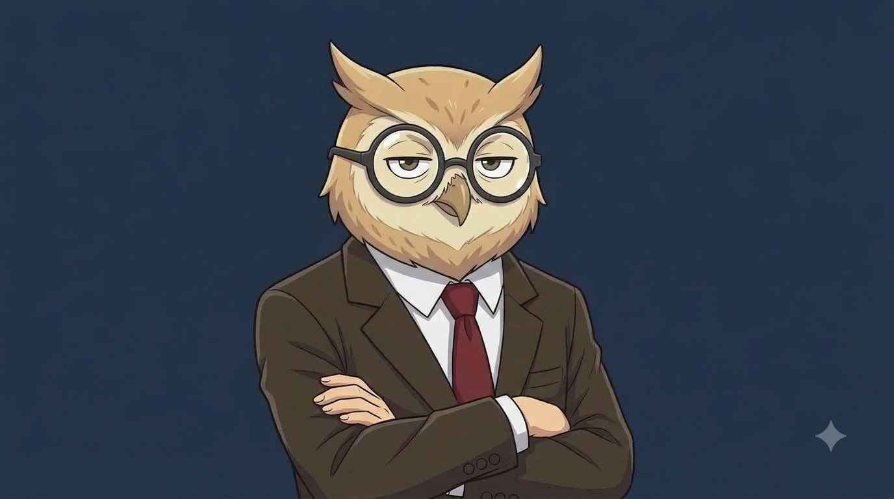

Canonical 5-Posture Studio System · Clean Cel Anime Style · Solid #1B2A4A Navy Keyer Background
Anthropomorphic owl head, round charcoal glasses, ear tufts, intelligent deadpan presenter stare.
Adult human torso, 5-finger articulated human hands, dark brown tailored blazer, white dress shirt, red tie.
Solid flat deep navy #1B2A4A for 1-click transparency removal via DaVinci Resolve 3D Keyer.
Master 16:9 PNGs saved in: brand/postures/





Drop the static PNG onto Track V2. Apply 3D Keyer to remove navy background. Enable Dynamic Zoom (1.00 ➔ 1.03 slow creep). Cuts cleanly between postures without spending a single AI video credit!
In Google Flow, click + in prompt bar, attach posture PNG, paste the prompt from above, and hit generate. Export as 1080p MP4 and key out the navy background in DaVinci.
On the Color Page or Edit Inspector, add 3D Keyer. Sample the #1B2A4A navy background. Clean the black/white clip matte to isolate the avatar perfectly over any B-roll or chart.